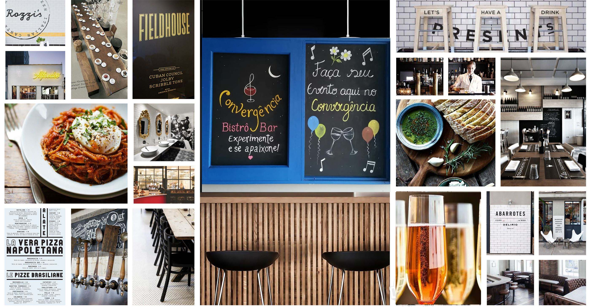

Project Background
The bistro contacted me 3 months in advance of the grand opening. The project comprised the creation of good online experience, marketing plan, paid campaign content, SEO strategy and print material.
They had the concept of the bistro in mind and wanted to translate that into a nice and simple online experience, focusing on the menu itself and the location.
Since they were innovating in the area we decided to research the marketing and create personas to find the average customer. We targeted the whole experience to approach and speak with this profile we created through research.
Role:
UX/UI Consultant & Designer
Moodboard & Style Guide
Goals and Objectives
The first goal was to discover the profile and personas of that neighborhood. What were they expecting? Would they visit a bistro? What kind of food and price range they expected? Do they search for local restaurants? Are they curious about the menu?With local interviews, we refined the marketing plan and I designed the online experience based on that.

Final UI Design